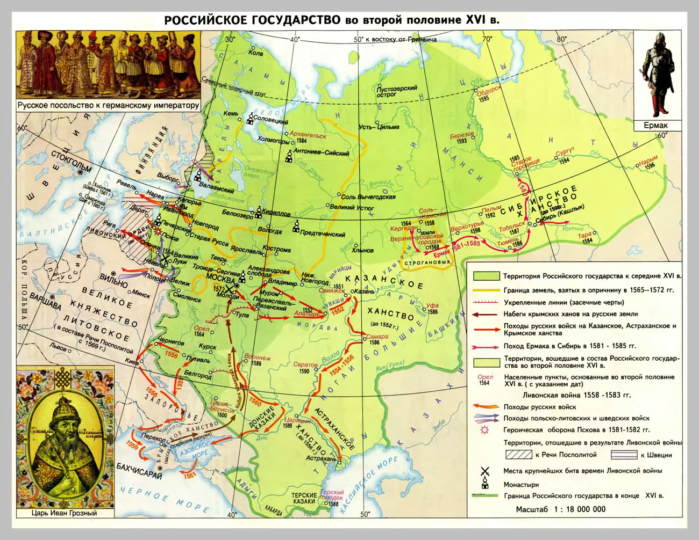

Биография
Иван IV Васильевич Грозный (1530–1584) — первый русский царь. Он родился 25 августа 1530 года в селе Коломенское под Москвой и был старшим сыном великого князя московского Василия III и Елены Глинской. После смерти отца в 1533 году трёхлетний Иван стал номинальным правителем, а регентом при нём выступила мать. В 1538 году Елена Глинская умерла, и юный Иван оказался в эпицентре ожесточённой борьбы за власть между боярскими родами. В 1545 году Иван достиг совершеннолетия и стал полноправным правителем. 16 января 1547 года он венчался на царство в Успенском соборе Московского Кремля, став первым официальным царём всея Руси.

Иван Грозный был женат несколько раз. Среди его жён — Анастасия Романовна Захарьина‑Юрьева, Мария Темрюковна, Анна Колтовская и Мария Фёдоровна Нагая, мать царевича Дмитрия. Из восьми детей Ивана шестеро умерли в детстве. Старший сын, Иван Иванович, погиб в 1581 году — по распространённой версии, он был убит отцом в ходе ссоры, хотя достоверных доказательств этому нет. Младший сын, Фёдор Иванович, впоследствии стал последним царём из династии Рюриковичей.
Царь умер 18 (28) марта 1584 года в Москве и был похоронен в Архангельском соборе Московского Кремля.
Реформы Избранной рады
В начале правления Иван IV опирался на круг советников — Избранную раду (Алексей Адашев, священник Сильвестр и др.). Были проведены важные реформы:
- Созыв первого Земского собора (1549 г.) — В него входили представители боярства, духовенства, служилых людей, купечества и черносошных крестьян. Собор помогал согласовывать решения власти с разными слоями общества и заложил основу для последующих реформ.
- Принятие нового Судебника (1550 г.) — 1) усилил контроль центральной власти над наместниками и ограничение их судебных полномочий, 2) введение наказаний за взяточничество 3) установление ответственности феодала за преступления своих крестьян
- Церковная реформа - В 1551 году прошёл Стоглавый собор — церковное собрание, чьи решения были изложены в 100 главах («Стоглав»). Реформа привела к унификации церковных обрядов и богослужений по всей стране: были установлены единые правила проведения служб и написания икон. Кроме того, были введены ограничения для церкви: приобретение новых земель теперь требовало разрешения царя, а священникам запретили заниматься ростовщичеством. Реформа также ужесточила дисциплину среди духовенства и предусматривала создание школ для подготовки священников.
- Военная реформа(1550-1556г.) — В рамках военной реформы в 1550 году было создано стрелецкое войско — полурегулярная пехота, набираемая из свободных людей. Приняли «Уложение о службе»: дворяне и дети боярские начинали служить с 15 лет, служба передавалась по наследству, а с каждых 150 десятин земли владелец должен был выставить одного вооружённого воина.
- Формирование системы приказов — центральных органов управления по отраслям и территориям (Разрядный, Пушкарский, Стрелецкий, Посольский, Поместный и др.). Во главе приказов царь назначал бояр или дьяков, что способствовало централизации власти.
- Налоговая реформа — Введена единая система налогообложения с основной единицей — большой сохой (400–600 га земли). Появились новые подати: пищальные деньги (на содержание стрельцов) и полоняничные (на выкуп пленных).
- Денежная реформа — Московский рубль утвердился как основная денежная единица. Унифицирована монетная система (копейка, деньга, полушка), право сбора торговых пошлин перешло к государству.
Внешняя политика и расширение государства
При Иване Грозном Россия значительно расширила свои границы:
- Присоединение Казани (1552 г.) и Астрахани (1556 г.) — контроль над Волгой и выход к Каспийскому морю.
- Начало освоения Сибири — поход Ермака (1582 г.) положил начало освоению сибирских земель, хотя окончательное присоединение произошло уже после смерти царя.
- Война со Швецией (1554–1557) завершилась перемирием и закреплением позиций на северо‑западе.
- Ливонская война (1558–1583 гг.) начальный успех — взятие Нарвы, Дерпта, Полоцка (1563), распад Ливонского ордена (1561). Итог: Ям‑Запольский мир с Речью Посполитой (1582) и Плюсское перемирие со Швецией (1583). Россия не получила выхода к Балтике и утратила ряд крепостей (Нарва, Ям, Копорье, Ивангород).

Итоги реформ: значительное расширение территории государства на востоке и юго‑востоке (Казань, Астрахань, начало покорения Сибири); укрепление безопасности южных границ; неудача в достижении главной цели на западе — выхода к Балтийскому морю, потеря ряда северо‑западных территорий.
Опричнина (1565–1572)
Политика опричнины была направлена на укрепление самодержавной власти и борьбу с боярской оппозицией. Она сопровождалась массовыми репрессиями, конфискациями земель и разорением ряда регионов (в т.ч. поход на Новгород в 1570 г.). Термин происходит от древнерусского слова «опричь» — «кроме», «отдельно».
Суть:
- разделение государства на опричнину (личный удел царя) и земщину (остальные территории)
- создание опричников — личной гвардии царя
- конфискация земель у бояр, расправы над «изменниками».
Ключевые события:
- учреждение опричнины в 1565 году (центр — Александровская слобода)
- погром Новгорода (1569–1570) с массовыми убийствами;
- набег крымского хана Девлет‑Гирея (1571) и сожжение Москвы — показавший слабость опричного войска;
- отмена опричнины в 1572 году из‑за её неэффективности.
Последствия опричнины:
- Усиление личной власти царя.
- Экономический кризис и запустение земель.
- Ослабление обороноспособности страны.
Итоги правления
Правление Ивана Грозного имело как положительные, так и отрицательные последствия:
- Положительные: Расширение территории государства: присоединение Казанского (1552) и Астраханского (1556) ханств, начало освоения Сибири (поход Ермака); Укрепление центральной власти и самодержавия: формирование сословно‑представительной монархии, созыв Земских соборов (с 1549); Военные преобразования: создание стрелецкого войска (1550), развитие артиллерии, принятие «Уложения о службе»; принятие Судебника 1550 года
- Отрицательные: Опричнина (1565–1572): массовые репрессии, конфискации земель, разорение ряда регионов (особенно Новгородской земли), падение авторитета боярства. Поражение в Ливонской войне (1558–1583): потеря выхода к Балтийскому морю и ряда северо‑западных крепостей (Нарва, Ям, Копорье, Ивангород) по итогам Ям‑Запольского мира (1582) и Плюсского перемирия (1583); неспособность опричного войска отразить набег крымского хана Девлет‑Гирея (1571), в результате которого была сожжена Москва
Иван Грозный умер в 1584 году, оставив страну в состоянии глубокого кризиса, который позже привёл к Смутному времени.
Галерея
Изображения эпохи Ивана Грозного: